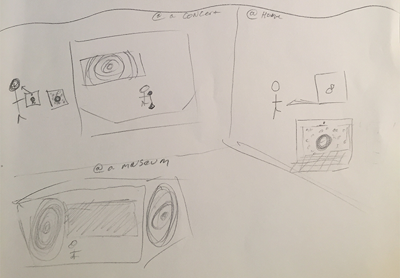

My Storyboard
Storyboard 1

This was my first storyboard. I started with the concept that my interactive design would take place at a concert. On the stage in the back would be my projection that listens to the sounds and shows the beat through a circle. I then moved onto the idea that each audience member would also recieve a tablet that is similar to the stage projection, but is a handheld version. When discussing with the partner, we thought that it might be nice to have the handheld devices vibrate to the beat. This goes back to how my idea started when I thought about the school assemblies I would attend where the hard of hearing students held balloons in oder to hear or feel the beat.
Storyboard 2
This is the second version of my storyboard. In this version, I expanded the idea across platforms from just a concert to a persons own devices they have at home: a computer or mobile device. I also thought about making a museum installation. I thought about taking the idea of personalizing the music as well and utilizing a camera to insert the user into the music by distorting their image with pixels based on how loud the sound and the flow of the beat is.